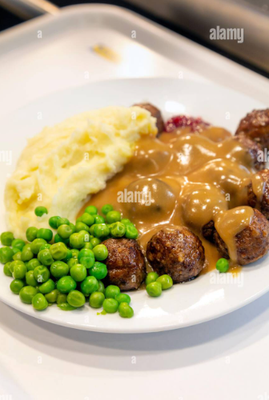

Swedish Meatballs with Mashed Potatoes

Description
Ingredients
For the Meatballs:
- 500 g (1.1 lbs) ground beef (or half beef, half pork)
- 1 small onion, finely chopped
- 1/2 cup breadcrumbs
- 100 ml (a bit less than 1/2 cup) milk
- 1 egg
- Salt and pepper to taste
- 1/2 tsp allspice (optional but traditional)
- Butter, for frying
For the Gravy:
- 2 tbsp butter
- 2 tbsp flour
- 300 ml (about 1 1/4 cups) beef stock
- 100 ml (about 1/2 cup) heavy cream
- 1 tsp soy sauce
- Salt and pepper to taste
For the Mashed Potatoes:
- 800 g (1.75 lbs) potatoes, peeled and chopped
- 50 g (3-4 tbsp) butter
- 100 ml (1/2 cup) warm milk or cream
- Salt to taste
Sides:
- 1 cup green peas (fresh or frozen)
- Lingonberry jam (optional but traditional)
- Pickled cucumber or gherkins (optional)
Instructions
-
Make the Mashed Potatoes:
- Boil potatoes in salted water until tender.
- Drain and mash with butter and warm milk.
- Season with salt and keep warm.
-
Cook the Peas:
- While potatoes are cooking, boil or steam peas for 3-4 minutes until tender.
- Drain and season with a small knob of butter, salt, and pepper if desired.
-
Prepare the Meatballs:
- Soak breadcrumbs in milk for 5 minutes.
- Mix in onion, meat, egg, salt, pepper, and allspice.
- Form into small meatballs.
- Fry in butter until browned and cooked through (10-12 min). Remove and keep warm.
-
Make the Gravy:
- In the same pan, melt butter and whisk in flour. Cook for 1-2 minutes.
- Slowly add beef stock, then cream and soy sauce.
- Simmer until thick. Season to taste.
-
Serve:
- Spoon mashed potatoes onto plates, add meatballs and gravy.
- Serve with buttered peas on the side.
- Add lingonberry jam and pickles if using.
Home